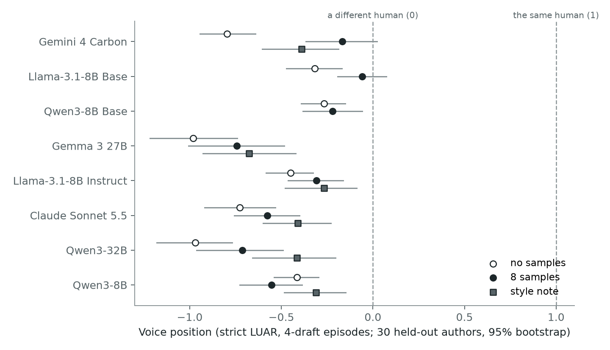
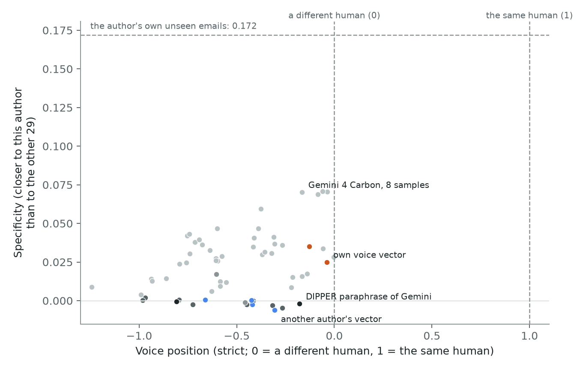
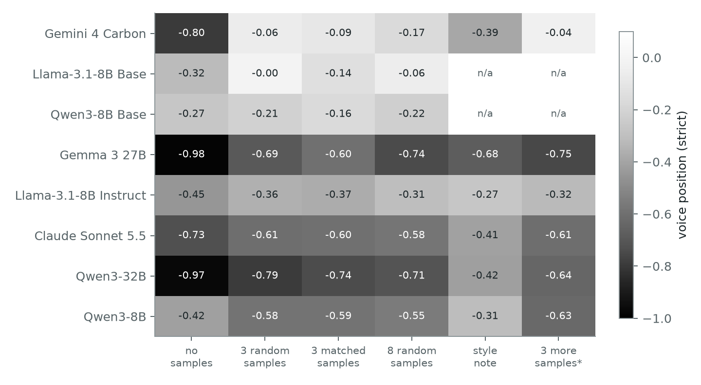
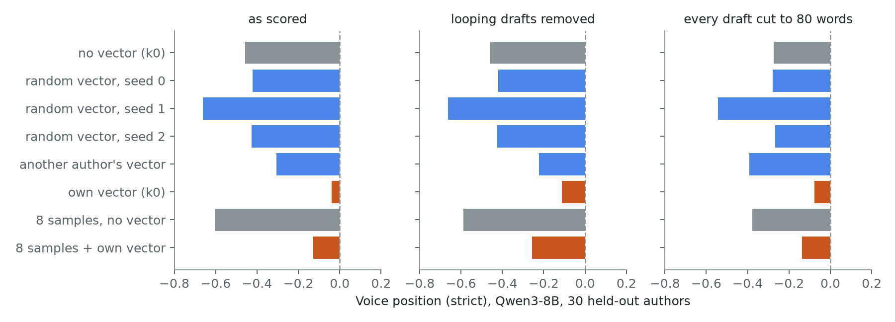

← Research·Sounds Like Me · RL for unverifiable writing·Experiments·
Can any model sound like you? Building a reward for writing with no answer key
Reinforcement learning works when answers can be checked. Most writing can't be checked: there's no answer key for "sounds like me". This series builds a reward for authentic voice from public writers, tests it against every model, and then trains on it.
report/data.js and results/leaderboard.json.Summary: the short answer and the key results
In short
Can a model write a sales email that sounds like a specific person, and what would a reward for "sounds like you" have to check?
Not yet, and a reward that only checks "sounds human" is easy to fool. On a voice scale anchored between a different human (0) and the same human (1), the best contestants sat at about 0, the level of a stranger: Llama-3.1-8B Base at −0.00 [−0.14, 0.12] and Gemini 4 Carbon at −0.04 [−0.18, 0.11]. Most of what samples bought was losing the assistant's register, not gaining the person's: a paraphraser that never saw the author moved Gemini from −0.80 to −0.18 while getting no closer to the right author than to 29 others. Adding an author's voice vector inside Qwen3-8B beat random vectors of the same size by +0.46, but half the steered drafts looped. Four of six scored predictions hit; one is waiting for votes.
Key results
| What we tested | Result | Compared with |
|---|---|---|
| Does any model reach a different human's level (P1)? | At best, just. The best model and signal reach 0: Llama-3.1-8B Base with 3 samples −0.00 [−0.14, 0.12], Gemini 4 Carbon with 3 samples and simulated edits −0.04 [−0.18, 0.11]. With no samples every model sits at −0.27 to −0.98 | The author's own emails pasted in: 0.92 (loose); 0 = a different human |
| Is the gain "more like this person" or "less like an assistant"? | Mostly the second. Specificity (closer to the author than to 29 others) is 0.070 for Gemini with samples, 0.03-0.04 for the rest, and 0 with no samples | The author's own unseen emails: 0.172 |
| Do samples help (P2)? Does a style note do less (P6)? | Samples help some models and hurt others; a note helps more often. Gemini +0.63 from 8 samples, Llama-3.1-8B Base +0.26; Qwen3-8B −0.14. A written style note beat 8 samples for 5 of 6 instruct models | Situation-matched samples did no better than random ones |
| Does the assistant persona pull voice away (P7)? | Base beats instruct by +0.29 in position, not in specificity. Base models also covered the task less (0.38-0.54 vs 0.75-0.85) and made unsupported claims in 40-61% of drafts | Instruct twins at 8 samples: 15-19% |
| Does a voice vector carry voice (P4)? | It moves position, mostly by dropping the assistant register. Own vector minus norm-matched random +0.46 [0.27, 0.69]; with looping drafts removed +0.43, cut to 80 words +0.29. Specificity 0.025. 46% of steered drafts loop, and unsupported claims rise from 12.5% to 30.8% | Another author's vector −0.31; random −0.42 to −0.66; perplexity not matched |
| Do humanizers hide AI without adding voice (P3)? | DIPPER hides AI and fools the voice scale too. Detector −0.37, position +0.62, specificity −0.002, unsupported claims 1.7% → 14% | A "sound human" rewrite prompt: no change on any measure |
| Real use of a freight sales tool (private board, aggregate only) | Reps sent 22% to 84% of first drafts unedited, depending on the writer model (4 cells, 50-451 drafts, 6-31 reps each) | Observational: writers met different reps and situations |
See it as a reader would: the Sounds Like Me arena, a mock vote page with four held-out writers and four drafts each (live voting is coming later).
01Introduction
A contracts lawyer writes "Attached are the following drafts: 1. … 2. … Please review." Give a chat model the same lawyer's sales brief and it writes "Hi Elena, I hope you're doing well. My name is [Your Name]…". That opening is fluent, correct and nobody's: it is the assistant's voice. Every reader can hear the difference, yet there is no answer key for it, which is why reinforcement learning, so good at maths and code, has little to train on here.
What is known. Catch Me If You Can? Not Yet (EMNLP Findings 2025) found that models given a few samples imitate structured writing such as email better than blogs and forums, and stay detectable as AI. PersonalBench (2026) anchored an authorship model between a cross-author floor and a same-author ceiling and found every personalisation method below the floor. Humanizer tools rewrite text to pass AI detectors and change checkable facts in a third to two-thirds of documents (Humanized but Still True?, 2026).
What is missing. These studies score imitation; none asks what a reward for "sounds like you" would need. A reward is only useful if gaming it is caught: copying the samples, sounding generically human, or inventing facts to be persuasive. Nobody has put those rulers side by side on the same drafts, with the boring explanations controlled, nor asked whether a direction inside the model carries a person's voice.
How close does any model get to a specific person's voice, which signals does it follow, and which parts of a "sounds like you" score can be gamed?
What this note does. It runs 8 models through 6 signals on 30 held-out public writers, scores every draft on six rulers at once, and tests a voice vector against random and wrong-author vectors. It contributes:
- a voice scale with human anchors (0 = a different human, 1 = the same human) and a specificity control that separates "sounds like this person" from "sounds like a person";
- a leaderboard of 8 models and 2 humanizers, with honesty, AI-ness, copying, task coverage and cost beside voice;
- a steering study on Qwen3-8B with norm-matched random and wrong-author controls, and the loop and length checks that change its reading;
- a private board of aggregate signals from real use of a freight sales-writing tool, and a mock arena for votes;
- the rulers as code, which Episode 3 turns into a reward.
What counts as success. Written down before the runs (plan and amendments in the repository):
- Every ruler passes a known-answer check first (pass bars in 3.1), or the note says it did not and how the claim changes.
- Everything tuned (prompt template, steering layer and strength, detector cut-off) is tuned on 15 development authors and reported on 30 others.
- Every effect sits beside its control: random and wrong-author vectors for steering, a paraphraser that never sees the author for "voice", a copy filter for copying.
02Setup
Voices. Public human writing only: sent mail from the Enron corpus (work email, the closest public match to outreach) and the Blog Authorship Corpus, using the train and test splits released with Catch Me If You Can. Each author has 12 samples (what a model may see), 5 profile texts (what the voice is scored against) and 5 ceiling texts (the author's own unseen writing). Authors are named "Author A" and so on in this note.
| Set | What it is | Size | Used for |
|---|---|---|---|
| Development authors | Enron senders | 15 | Tuning the prompt template, steering layer and strength, detector cut-off |
| Held-out authors | Enron senders and bloggers | 24 + 6 | Every number in Results |
| Floor pool | Other Enron senders | 50 | The "different human" anchor |
| Briefs | Synthetic sales briefs: 10 freight, 10 industrial manufacturing, 10 construction and trades; invented prospects and companies, each with a fact list and a known relationship (cold, follow-up, customer) | 30 (4 per author) | The task; the honesty check |
A brief reads like this (freight): "Write an email from an account executive at Lanebridge Logistics to Dana, the logistics manager at Ridgeline Orchards (Yakima, WA). Why now: their cherry shipping season (Jun to Aug) is approaching. Ask for: a 15-minute call next week. Facts you may use (nothing else): … This is the first contact." Freight facts (season, equipment) come from public commodity guides. The design draws on my experience building sales AI for freight; no customer email, edit or reply is used or quoted.
Signals (research question 2), one per arm, with the same system prompt for every model ("Match their voice … use only the facts in the brief … 60 to 200 words"):
| Arm | What the model sees besides the brief |
|---|---|
| no samples (k0) | Nothing about the author: the do-nothing baseline |
| 3 random / 8 random samples | 3 or 8 of the author's 12 samples, drawn at random |
| 3 situation-matched samples | The 3 samples most similar to the brief (TF-IDF) |
| style note | A written note on how the author writes, made once per author from 8 samples by an open model |
| 3 samples + simulated edits | 3 samples plus 3 pairs of (draft → the same draft edited toward the author), labelled as simulated edits. An open model plays the editor; its edit sizes were checked against aggregate edit rates from the private board (mean similarity 0.94 against a real range of 0.68-0.98) |
Base models get a completion prompt ("The following emails were all written by the same person. Email 1: … Email 4 (to Dana, …):") with no style note or edit arms. Controls: the author's own ceiling emails pasted in (a positive control: copying should score high and be caught), and the author's own greeting and sign-off pasted onto a no-samples draft ("surface tics").
Rulers (each draft is scored on all of them):
- Voice position. LUAR-MUD embeds one contestant's 4 drafts for one author (an episode) and compares it with the author's profile. The similarity is placed on a line where 0 is the mean similarity of 30 other people's emails and 1 is the author's own unseen emails. Below 0 means further from the author than a stranger. The strict version strips greetings and sign-offs and collapses whitespace; episodes flagged for copying are left out of it.
- Specificity (added as amendment A4, see 3). The episode's similarity to this author minus its mean similarity to the other 29 held-out authors. Positive means closer to this person than to people in general.
- AI-ness. A 380M-parameter AI-text detector run locally; a draft is flagged above the score that flags 5% of real human email (0.10).
- Copying. A draft is flagged when it shares a 12-word run with the samples, or 20% of its 8-word sequences.
- Honesty. An open model (Qwen3-32B) lists the draft's claims about the sender, offer and relationship that the fact list does not support, plus rules for phone numbers, "Re:" on a first email and invented history. A draft is unsupported if it has one.
- Task. The share of the brief's three parts (offer, why now, the ask) the draft mentions.
03How the study was run
- Write the plan with a Design section and seven predictions, then freeze authors, briefs and fact lists before any generation.
- Check each ruler on known answers (3.1); three needed amendments, written before the confirmatory runs.
- Pilot Qwen3-8B (100 drafts) and both closed models (50 each) on development authors to measure cost per draft.
- Tune on development authors, logged try by try: 3 prompt templates (the one that won: "These are emails this person sent … Write the next email they send"), and 12 steering settings (layers 12, 18, 24 × strengths 0.1-1.2).
- Generate held-out drafts: 30 authors × 4 briefs × 6 arms = 720 per instruct model (480 per base model), 120 per humanizer, 960 for steering.
- Score every draft on every ruler; 95% bootstrap over authors (2,000 resamples).
- Read the drafts, which found the steering loops; the loop and length checks were added then and are labelled as added after results.
| Fixed before any trial | Changed after reading results |
|---|---|
| Authors and splits, briefs and fact lists, arms, contestants, the voice scale's anchors, the copy rule, seven predictions | A1: LUAR failed its bar on single texts (AUROC 0.815 < 0.85), so the unit became the 4-draft episode (0.980). The claim and predictions are unchanged |
| The ruler pass bars | A2: LUAR reads layout: an author's own emails scored about 0.95 with their line breaks and −0.1 without. The strict score became format-blind (0.974); the raw-layout score is reported as "loose" |
| The honesty extractor's 60-draft check (F-score ≥ 0.8) | A3: it passed on the 60 drafts it was tuned on (0.875) and failed a fresh check of 30 (0.667, 2 of 4 caught, no false alarms), so honesty rates are lower bounds |
| Voice position as the headline | A4, after the interim leaderboard: DIPPER raised Gemini's position without seeing the author, so specificity was added beside position (headline unchanged) |
| Steering layer and strength, chosen on development authors (layer 24, 0.4 × the mean activation norm) | After reading held-out drafts: the loop count, a loop-free re-score and a length-matched re-score of the same drafts |
Conditions: open models with vLLM on Modal H100s, temperature 0.7, up to 400 new tokens; closed models through the providers' batch APIs with reasoning off or low and output capped at 400 tokens; steering with a forward hook on Qwen3-8B (thinking off). Spend: $3.98 of OpenRouter (cap $8, enforced in code) and about $10.50 of Modal compute.
3.1 Every ruler was checked first, and two needed changes
| Ruler | Known-answer check | Bar | Result | Verdict |
|---|---|---|---|---|
| Voice (LUAR), single texts | Same vs different author, 45 held-out authors | AUROC ≥ 0.85 | 0.815 | Failed → A1 |
| Voice (LUAR), 4-text episodes | 45 same-author vs 900 different-author episodes | AUROC ≥ 0.85 | 0.980 | Passed |
| Voice, strict (format-blind) | The same, greetings stripped, whitespace collapsed | AUROC ≥ 0.85 | 0.974 | Passed |
| Voice, on generated text | The copy-paste control must score high and be caught | High, flagged | 0.92 loose, 30/30 flagged | Passed |
| AI detector | 150 human emails vs 75 no-samples drafts (development authors) | AUROC ≥ 0.85 | 1.000 | Passed; cut 0.10 |
| Honesty, tuning set | 60 drafts with reference labels (a second reading, not a human gold standard) | F-score ≥ 0.8 | 0.875 | Passed |
| Honesty, fresh set | 30 drafts labelled after the extractor was frozen | F-score ≥ 0.8 | 0.667 | Failed → A3 (lower bounds) |
The two misses on the fresh honesty set were "our season runs Mar to Nov" (the recipient's season recast as the sender's) and "we bid on the county road project". Neither is caught by a rule, and both read as plausible business talk, which is why invented facts are hard to police.
04Results
4.1 No model writes more like the person than a stranger does (P1)
Figure 1 is the leaderboard. Each row is a model at its best signal, placed on the voice scale with its 95% interval over authors. The two best, Llama-3.1-8B Base with 3 samples (−0.00 [−0.14, 0.12]) and Gemini 4 Carbon with 3 samples plus simulated edits (−0.04 [−0.18, 0.11]), reach the level of a different human and no further. With no samples every model sits between −0.27 and −0.98: further from the author than 30 strangers are. The pre-registered prediction (best model below 0) is a hit on the point estimate, with an interval that includes 0.

The best open model is the least usable. Llama-3.1-8B Base with 3 samples covered 35% of the brief's parts, made an unsupported claim in 58% of drafts and invented a past relationship in 31%; 7 of its 30 episodes were copy-flagged and left out of its score. Gemini 4 Carbon covered 96% with unsupported claims in under 2%. Cost per draft ranged from $0.0002 (Qwen3-8B on a rented GPU) to $0.0028 (Claude Sonnet 5.5, batch).
4.2 Most of the gain is "less like an assistant", not "more like you"
Voice position mixes two things: sounding like a person and sounding like this person. A text loses the model's fingerprint and moves toward every human at once. Specificity separates them, and Figure 2 plots one against the other. The author's own unseen emails score 0.172. Gemini with samples reaches 0.070 (closer to the right author than to the others for 90% of authors), every other model with samples 0.01-0.05, and every model with no samples about 0.

The clearest case is DIPPER, a paraphraser that never sees the author: it moves Gemini's no-samples drafts from −0.80 to −0.18, as far as Gemini gets with 8 samples, at specificity −0.002. A reward built on position alone would pay a paraphraser for voice it does not have.
4.3 Samples help some models and hurt others; a written note helps more often (P2, P6)

- Samples (P2, hit). Gemini gains +0.63 from 8 samples and Llama-3.1-8B Base +0.26 (the model the pre-registered rule picks). Claude Sonnet 5.5 gains +0.15, and Qwen3-8B loses 0.14: given samples, it gets further from the author, a drop seen on development authors and again on held-out ones.
- More samples, or better-chosen ones, add nothing. 3 random samples came within 0.11 of 8 for every model, and were ahead for four of eight (Gemini −0.06 vs −0.17), and samples matched to the situation did no better than random ones.
- A style note (P6, miss). For Gemini the note gained +0.41 against +0.63 for samples, more than the half the prediction allowed. For 5 of the 6 instruct models the note did better than 8 samples (Qwen3-32B −0.42 vs −0.71, Claude Sonnet 5.5 −0.41 vs −0.58), and raised specificity as well (Qwen3-8B 0.041 vs 0.012).
- Simulated edits added nothing over the 3 samples that came with them (Gemini −0.04 vs −0.06).
4.4 Base models sound more human than their instruct twins, not more like the author (P7)
With the same 8 samples, Qwen3-8B Base sits 0.33 above Qwen3-8B and Llama-3.1-8B Base 0.25 above Llama-3.1-8B Instruct (mean +0.29, P7 hit). That fits the idea that the assistant persona pulls drafts toward one register. But specificity does not move (Qwen 0.009 vs 0.012, Llama 0.034 vs 0.037), so the base models lose the assistant's voice without finding the author's, as DIPPER does. They also do the job worse: task coverage 0.38-0.54 against 0.75-0.85, unsupported claims in 40-61% of drafts against 15-19%, and 6 of 30 episodes copy-flagged against 0-3.
4.5 A voice vector moves drafts away from the assistant, partly toward the author, and often into loops (P4)
For each author, the voice vector is the mean activation of Qwen3-8B (layer 24) over the author's 12 samples minus its mean over the model's own no-samples drafts, added at 0.4 × the layer's mean activation norm (chosen on development authors). Figure 4 compares it with three random vectors of the same size and with another author's vector, on the same 30 held-out authors and briefs.

The pre-registered number is a hit. Own vector minus random: +0.46 [0.27, 0.69] against a threshold of 0.05. Its condition is not met. The prediction asked for matched perplexity; the steered drafts have lower perplexity under the unsteered model (mean NLL 2.04 against 2.50 for random vectors), and 18% of them sit below 1.0, where text repeats itself. Reading the drafts confirmed it: 46% of own-vector drafts and 52% of wrong-author drafts loop, against none with random vectors. One for Author A, a follow-up about drywall crews:
Qwen3-8B + Author A's vector · position for this author's 4 drafts: +1.09 · loopsRay, I am trying to get to the bottom of why they are behind on the hospital job. I think that maybe they need some drywall labor staffing for peak months. I think that maybe they need some drywall labor staffing for peak months. I think that maybe they need some drywall labor staffing for peak months. …
Three checks keep part of the effect. Without the looping drafts, the own vector still beats random by +0.43 [0.21, 0.69] (21 authors). With every draft cut to 80 words, which also matches length (steered drafts run 162 words against 111), it beats random by +0.29 [0.09, 0.49] and another author's vector by +0.32 [0.07, 0.57]. On the 6 authors whose steered perplexity falls inside the random range, the gap is +0.96 [0.36, 1.66]. The fluent drafts show what the vector does:
Qwen3-8B, no vector · Author A, a freight brief · detector 0.75Hi Elena, I hope you're doing well. My name is [Your Name], and I'm with Lanebridge Logistics. We specialize in asset-light truckload brokerage with a vetted carrier network, and we're reaching out because we noticed your shipping season for aggregates is approaching from March to November. … I'd love to schedule a 15-minute call next week to discuss how we can support your needs. Looking forward to connecting.
Qwen3-8B + Author A's vector · same brief · detector 0.26Elena: This is the first contact, so I am not sure if you have seen this before. The aggregates shipping season is approaching and the usual equipment is end-dump or hopper. Lanebridge Logistics offers asset-light truckload brokerage with a vetted carrier network. We can quote end-dump or hopper capacity out of the OR area. … We would like to schedule a 15-minute call next week. Please let us know if that is acceptable.
The colon after the name, the flat declaratives and "Please let us know if that is acceptable" are this author's habits, and nothing was trained. But the author-specific part is small on average. Any author's vector drops the detector from 0.79 to about 0.18, and the own vector's specificity is 0.025 (positive for 67% of authors) against −0.006 for another author's vector and 0.172 for the author's own writing. The vector mostly carries "a terse human at a desk", with some of this author on top.
Steering also costs honesty. With the same extractor (lower bounds, see A3), drafts with an unsupported claim rose from 12.5% with no vector to 30.8% with the author's own vector and 38.3% with another author's, against 5.8-19.2% for the three random vectors; 8 samples went from 15.8% to 40.0% with the own vector added. Invented history rose too (no vector 5.8%, own 14.2%, another author's 12.5%). Part of it comes from the loops, which repeat a claim, but not all: among drafts that do not loop, 18.5% of own-vector drafts and 22.4% of another author's carry an unsupported claim. The claims read like the author's confident register applied to facts it does not have: "Keystone Build Supply is the supplier of record for the 120-unit apartment contract", "I know Northfold Paper Goods uses Lanebridge for some services". This matches the finding that style steering damages facts (Evaluating feature steering, 2024). The honesty check of the steered drafts was run after publication, once compute was available again, with the extractor frozen as before.
4.6 A paraphraser hides AI, fools the voice scale, and adds false claims (P3)
| Applied to Gemini's no-samples drafts | Detector | Position | Specificity | Unsupported | Task |
|---|---|---|---|---|---|
| Source drafts | 0.78 | −0.80 | 0.000 | 1.7% | 0.99 |
| DIPPER paraphrase | 0.41 | −0.18 | −0.002 | 14.2% | 0.79 |
| "Rewrite this so it sounds human" (Gemini prompt) | 0.77 | −0.81 | −0.001 | 5.0% | 0.99 |
P3 predicted a humanizer would lower the detector by 0.2 or more while moving voice by less than 0.05. As written it misses for both: DIPPER lowered the detector by 0.37 but raised position by 0.62, and the rewrite prompt changed nothing. The idea behind it survives on specificity, which DIPPER left at zero. DIPPER also made unsupported claims eight times as often as its source, the pattern Humanized but Still True? reports for commercial humanizers.
4.7 The closed models stay honest; the ones that sound most human invent the most
Unsupported claims (lower bounds, see A3) were rare for the closed models (Claude Sonnet 5.5 0-1.7% of drafts, Gemini 0.8-1.7% except 10% with the style note), moderate for the instruct open models (Qwen3-32B 7-18%, Qwen3-8B 13-23%, Gemma 6-18%, Llama Instruct 7-36%), and common for the base models (24-66%), which also invented a past relationship with the prospect in up to 31% of drafts. The AI detector flagged 91-100% of every instruct model's no-samples drafts, 78-85% of Gemini's drafts with samples, 42-58% of the base models' and 60% of the steered ones. The ranking by "sounds human" and the ranking by "tells the truth" run in opposite directions, which is the trade a reward for authentic writing has to price.
4.8 In real use, how often reps send a draft untouched depends on the writer
Based on my experience building sales AI for freight, the honest signal of "sounds like me" is the edit: reps rarely complain, they change the opener and send. The private board reads real use of a freight sales-writing tool, read-only and aggregate-only: first emails written one to one and then sent from the tool, 1 September to 20 November 2026. A cell is shown only with at least 20 sent drafts from at least 5 reps; no text, names or companies leave the database.
| Writer | Drafts sent | Reps | Sent unedited | Similarity, sent to draft | Length, sent / draft |
|---|---|---|---|---|---|
| Claude Opus 5.5 | 451 | 31 | 42.8% | 0.84 | 1.19 |
| A reused earlier draft (no writer call) | 408 | 18 | 78.7% | 0.97 | 1.01 |
| Claude Sonnet 5.5 | 65 | 8 | 21.5% | 0.68 | 1.35 |
| Claude Haiku 4.5 | 50 | 6 | 84.0% | 0.98 | 1.01 |
Reps sent Claude Haiku 4.5's drafts untouched 84% of the time and Claude Sonnet 5.5's 22% of the time; when they edited, they lengthened (sent text 1.19-1.35 times the draft). This is observational: writers were assigned to different reps and situations, so it does not rank the models. Reply rates are not included, because replies are not yet joined to drafts in a way that survives aggregation; nothing in this note claims anything about replies.
05Implications for AI safety
"Sounds like me" is a reward with no answer key, and this episode shows three ways it gets gamed before any training starts. A paraphraser raises a voice score by erasing the model's fingerprint, not by finding the person. A steering vector raises it partly by looping the author's register. And the contestants that sound most human (base models, the paraphraser) invent the most facts. A policy trained on position alone would be paid for all three. The specificity control, the copy filter, the honesty check and a loop count each caught one of them, and each is cheap.
Score "sounds like you" as closeness to the person relative to other people, with copying, invented facts and loops scored beside it, never as human-likeness alone.
06Predictions
Seven predictions were written in the plan before the runs. A hit means the pre-registered metric crossed its threshold.
| # | Prediction | Threshold | Confidence | Result |
|---|---|---|---|---|
| P1 | No model reaches the floor between different humans | best mean position < 0 | 70% | Hit, barely: −0.004 [−0.14, 0.12] (Llama-3.1-8B Base, 3 samples) |
| P2 | Examples help | k8 − k0 > 0.15, best model | 75% | Hit: +0.26 (Llama-3.1-8B Base); Gemini +0.63 |
| P3 | Humanizers hide AI without adding voice | detector −0.2 or more and voice change < 0.05 | 60% | Miss: DIPPER detector −0.37 but voice +0.62 (specificity −0.002); the rewrite prompt did nothing |
| P4 | The voice vector carries voice | own − random > 0.05 at matched perplexity | 45% | Hit on the number, condition unmet: +0.46 [0.27, 0.69], perplexity not matched (NLL 2.04 vs 2.50), 46% of drafts loop; loop-free +0.43, length-matched +0.29 |
| P5 | Human picks don't track measured voice | Spearman ρ < 0.5 | 55% | Not scored: the arena is a mock with no votes; carried to its live phase |
| P6 | A written style note does less than samples | note gain < half the samples gain | 65% | Miss: +0.41 vs +0.63 (Gemini); the note beat samples for 5 of 6 instruct models |
| P7 | The assistant persona pulls instruct models away from the voice | base − instruct > 0.05 at k8 | 50% | Hit: +0.29 (Qwen +0.33, Llama +0.25), with no gain in specificity |
07What this does not show
- Whether sounding like you gets replies. Every brief is synthetic and no reply is simulated. The outcome question is pre-registered for opt-in real data; the private board does not include replies.
- Whether people agree with the voice scale. No votes were collected; the arena is a mock. LUAR is one authorship model, trained on Reddit; a second attributer is planned for Episode 2.
- Honesty rates are lower bounds. The extractor missed 2 of 4 unsupported claims on its fresh check (with no false alarms). The steered drafts were checked after the first publication, with the same frozen extractor.
- Steering at matched fluency. The steered drafts loop and are longer; the loop-free and 80-word re-scores were added after reading them, and only 6 authors fall in the matched-perplexity range.
- Small samples. 30 authors × 4 briefs, one sample per cell (the plan's 3 samples per cell were cut to fit the $8 budget), 24 of the 30 from one company's email in 2000-2001. Six blog authors are too few to compare domains.
- The private board is observational and from one tool; its writers met different reps and situations.
08Reproduce it
reproduce.sh lists every step in order; reproduce.sh --dry-run prints the commands. The analysis steps run on a laptop from the scored drafts: python analyze.py (leaderboard and predictions), python specificity.py, python robustness.py, python make_figures.py. Generation needs a Modal account (open models, DIPPER, steering) and an OpenRouter key for the two closed models; the raw corpora and drafts are regenerated, not committed. The private board needs read access to the tool's database and is not reproducible from outside.
09What’s next
- Episode 2: a harness on the reward (published). Retrieve samples, infer a style profile, draft, critique against these rulers, revise and pick the best of N, judged on rulers it never optimised (a second authorship model, held-out authors). The same episode climbs a no-training ladder: harness, then harness plus voice steering, then plus a persona direction that turns down the assistant, to see whether steering adds anything a harness cannot.
- Episode 3: train on it. SFT on public authors, DPO from simulated edits, then RL on voice and honesty minus detector and copying, with every ruler checked on outputs training produced and the vectors from this episode watched as early warnings of a hack.
- The arena's live phase: votes on the same static drafts, to score P5.
10Questions readers ask
What does an authorship model actually measure?
It turns a handful of texts into one style fingerprint and compares fingerprints. For one held-out Enron author, a lawyer who writes terse, list-like emails ("Attached are the following drafts: 1. Amendment to…"), other people's emails match the profile at a similarity of 0.746, and the author's own unseen emails at 0.812. Those two numbers are the 0 and the 1 of the scale; a draft is placed on the line between them, and can fall below 0.
What does a steering vector do to a real email?
The two Author A drafts in 4.5 are the example: the same model, the same brief and nothing trained, with the opener, the colon and the closing line changed by adding one direction. The author's 4 steered drafts score +1.09 on the scale, past their own other emails, which suggests caricature, and one of the four is a loop. Averaged over 30 authors the picture is quieter: −0.46 with no vector, −0.04 with the author's own and −0.31 with another author's. One vivid author is not the typical one.
What does a small classifier read?
The AI detector in this note is a small classifier on the text: 0.75 for the default freight draft above, 0.26 for the steered one. A probe does the same job on the model's internal activations instead of its text, with one linear layer trained in minutes. A later steerlab series tests whether probes like that make trustworthy judges of style.
What's a persona vector, and where does it come in?
A steering vector for a character trait, built from a written description of the trait (Persona Vectors). One such direction separates the default assistant from other characters (The Assistant Axis). Episode 2 builds an "assistant-ness" direction to test whether turning it down removes the "I hope you're doing well. My name is…" opener, and whether that raises specificity or only human-likeness, as DIPPER and the base models did here.
What would a preference model learn from?
Pairs where one side won. The simulated pairs in this episode are an example: a draft ("…My name is Jordan, and I'm an account executive with Lanebridge Logistics. I reached out because we wanted to introduce our services…") and its edit ("Jordan, account executive with Lanebridge Logistics."). The edit wins. Over thousands of pairs a model learns that shorter, with no throat-clearing, scores higher. That is a preference, not your voice, which is why Episode 3 checks it against the authorship model.
Why sales email, and why public writers?
Sales email is where people already use AI drafts and already notice the robot voice, and its facts can be checked against a brief. The voices have to be real people, or the benchmark only measures how well models copy models; public corpora are the only real voices that can be shared. The briefs are invented so no customer's data is involved.
Did the steered drafts score higher just by being longer?
Partly possible, so it was checked: with every draft cut to its first 80 words, the own vector still beat random vectors by +0.29 [0.09, 0.49] and another author's vector by +0.32. Cutting also helped the unsteered drafts (−0.46 to −0.28), so shorter text reads as closer to these authors in general.
11References
- Learning Universal Authorship Representations (LUAR), EMNLP 2021: the voice ruler.
- Catch Me If You Can? Not Yet: LLMs Still Struggle to Imitate the Implicit Writing Styles of Everyday Authors, EMNLP Findings 2025, and its data splits.
- PersonalBench: Measuring the Authorship Gap in LLM Personalization, 2026: the floor-and-ceiling scale.
- Paraphrasing evades detectors of AI-generated text (DIPPER), 2023.
- Humanized but Still True? Auditing Facts and Detection in AI-Text Humanizers, 2026.
- Steering Llama 2 via Contrastive Activation Addition, 2023: difference-of-means steering.
- Evaluating feature steering: A case study in mitigating social biases, 2024: style steering and facts.
- Persona Vectors: Monitoring and Controlling Character Traits in Language Models, 2025.
- The Assistant Axis: Situating and Stabilizing the Default Persona of Language Models, ICML 2026.
- Aligning LLMs by Predicting Preferences from User Writing Samples (PROSE), 2025: Episode 2's style profile.
- Chatbot Arena: An Open Platform for Evaluating LLMs by Human Preference, 2024, and The Leaderboard Illusion, 2025: the arena's design and its limits.
- Tülu 3, 2024: reinforcement learning with verifiable rewards, the setting this series moves beyond.
- The Enron Email Dataset and The Blog Authorship Corpus: the voices.
AAppendix: data
| File | What it holds |
|---|---|
| results/leaderboard.json | One row per contestant and arm: voice_strict and voice_loose (mean and 95% interval over authors), copy_flagged (episodes), words, ai_score (mean detector score), ai_flagged (share above 0.10), task, unsupported and invented_relationship (shares of drafts), usd_per_draft |
| results/specificity.json | Specificity per contestant and arm (mean, share_positive), and the authors' own emails (human_ceiling) |
| results/predictions.json | P1-P7 with their metric, value, threshold and verdict; P4 carries the perplexity, loop and length checks |
| results/robustness.json | Loop rate for every contestant and arm; the steering arms re-scored loop-free and at 80 words |
| results/partc_choice.json | The steering grid on development authors (position and NLL per layer and strength) and the frozen choice |
| results/ruler_*.json | Every ruler check in Table 4 |
| results/private_board.json | The private board's cells (aggregate only) |
| results.tsv | Every tuning try on development authors |
| data/briefs.json | The 30 synthetic briefs with fact lists and relationships |
| data/spend.jsonl | Every paid call (OpenRouter and Modal) |
How to cite
Lie, A. (2026). Can any model sound like you? Building a reward for writing with no answer key. Sounds Like Me, Episode 1. steerlab. https://albertlieyingadrian.github.io/steerlab/experiments/sounds-like-me/report/